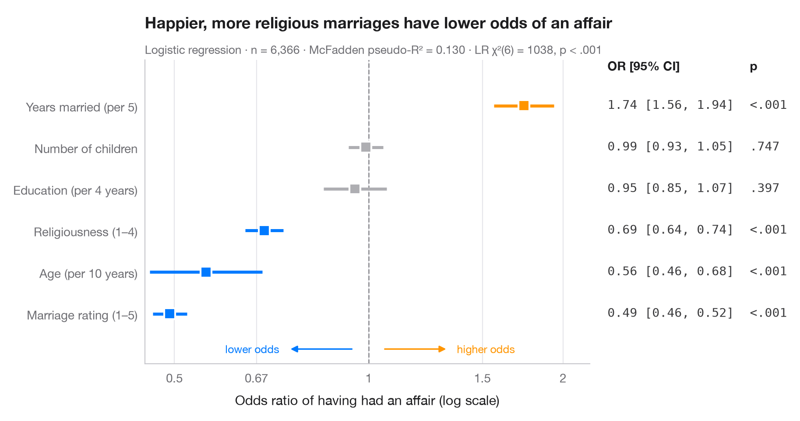

Odds-ratio forest plot
Logistic regression odds ratios on a log scale, with a table of OR [95% CI] alongside.

Logistic coefficients are log-odds; exponentiated, they become odds ratios. Each point is the multiplicative change in the odds of the outcome for a one-unit change in the predictor, the line is its 95% confidence interval, and the dashed line at OR = 1 means "no effect". Because ratios are symmetric on a log scale (0.5 is as strong as 2), the x-axis is logarithmic. The right-hand column repeats the numbers, just like the table in a paper.
Data are the 1974 Redbook survey of 6,366 married women bundled with
statsmodels (sm.datasets.fair). The outcome is whether the respondent
reported any extramarital affair; the model is fitted with smf.logit() and the
odds ratios are np.exp() of params and conf_int().
import matplotlib.pyplot as plt
import numpy as np
import statsmodels.api as sm
import statsmodels.formula.api as smf
from matplotlib.ticker import FixedLocator, NullLocator
# Data: Fair's affairs survey; rescale a few predictors to meaningful units
df = sm.datasets.fair.load_pandas().data
df = df.assign(affair=(df.affairs > 0).astype(int), age10=df.age / 10,
yrs5=df.yrs_married / 5, educ4=df.educ / 4)
model = smf.logit("affair ~ rate_marriage + religious + age10 + yrs5 + children + educ4",
data=df).fit(disp=False)
# Odds ratios with 95% CI (intercept dropped), sorted by effect
tab = np.exp(model.conf_int().drop("Intercept")).rename(columns={0: "low", 1: "high"})
tab = tab.assign(OR=np.exp(model.params), p=model.pvalues).sort_values("OR")
labels = {"rate_marriage": "Marriage rating (1–5)", "religious": "Religiousness (1–4)",
"age10": "Age (per 10 years)", "yrs5": "Years married (per 5)",
"children": "Number of children", "educ4": "Education (per 4 years)"}
fig, ax = plt.subplots(figsize=(8.6, 4.6))
y = np.arange(len(tab))
colors = np.where(tab["p"] < 0.05, np.where(tab["OR"] > 1, "#FF9500", "#007AFF"), "#AEAEB2")
ax.axvline(1, color="#8E8E93", lw=1, ls="--", zorder=1)
ax.hlines(y, tab["low"], tab["high"], color=colors, lw=2.5, zorder=2)
ax.scatter(tab["OR"], y, s=80, marker="s", color=colors, edgecolor="white", lw=1.5, zorder=3)
# Right-hand "table" column: OR [95% CI] and p-value
tr = ax.get_yaxis_transform()
top = len(tab) - 0.15
ax.text(1.04, top, "OR [95% CI]", transform=tr, fontsize=10, fontweight="semibold")
ax.text(1.36, top, "p", transform=tr, fontsize=10, fontweight="semibold")
for yi, (_, r) in zip(y, tab.iterrows()):
ax.text(1.04, yi, f"{r.OR:.2f} [{r.low:.2f}, {r.high:.2f}]", transform=tr,
va="center", fontsize=10, color="#3A3A3C", family="monospace")
ax.text(1.36, yi, "<.001" if r.p < .001 else f"{r.p:.3f}".lstrip("0"), transform=tr,
va="center", fontsize=10, color="#3A3A3C", family="monospace")
ax.set_xscale("log")
ax.xaxis.set_major_locator(FixedLocator([0.5, 0.67, 1, 1.5, 2]))
ax.xaxis.set_minor_locator(NullLocator())
ax.set_xticklabels(["0.5", "0.67", "1", "1.5", "2"])
ax.set_xlim(0.45, 2.2)
ax.set_yticks(y, [labels[t] for t in tab.index])
ax.set_ylim(-1.2, len(tab) + 0.1)
ax.grid(axis="x"); ax.grid(axis="y", visible=False)
ax.set_xlabel("Odds ratio of having had an affair (log scale)")
# Direction hints along the bottom of the panel
for x0, x1, txt, c in [(0.95, 0.75, "lower odds", "#007AFF"), (1.05, 1.33, "higher odds", "#FF9500")]:
ax.annotate("", (x1, -0.85), (x0, -0.85), arrowprops=dict(arrowstyle="-|>", color=c, lw=1.2))
ax.text(x1 * (0.97 if x1 < 1 else 1.03), -0.85, txt, color=c, fontsize=9, va="center",
ha="right" if x1 < 1 else "left")
ax.set_title("Happier, more religious marriages have lower odds of an affair", pad=26)
ax.text(0, 1.02, f"Logistic regression · n = {int(model.nobs):,} · "
f"McFadden pseudo-R² = {model.prsquared:.3f} · LR χ²({model.df_model:.0f}) = "
f"{model.llr:.0f}, p < .001", transform=ax.transAxes, fontsize=9.5, color="#6E6E73")
plt.show()
Figures use the optional Statlas style: add plt.style.use("statlas.mplstyle") to match the look exactly.
More in Regression models

Coefficient plot
Regression estimates with 95% confidence intervals, one row per term.
ggstats::ggcoef_model()
Comparing nested models
Coefficients of three nested regressions side by side, to see how estimates shift.
ggstats::ggcoef_compare()
Predicted probabilities
Model-based probability curves with 95% CI ribbons across a predictor, by group.
ggeffects::ggpredict() / marginaleffects::plot_predictions()